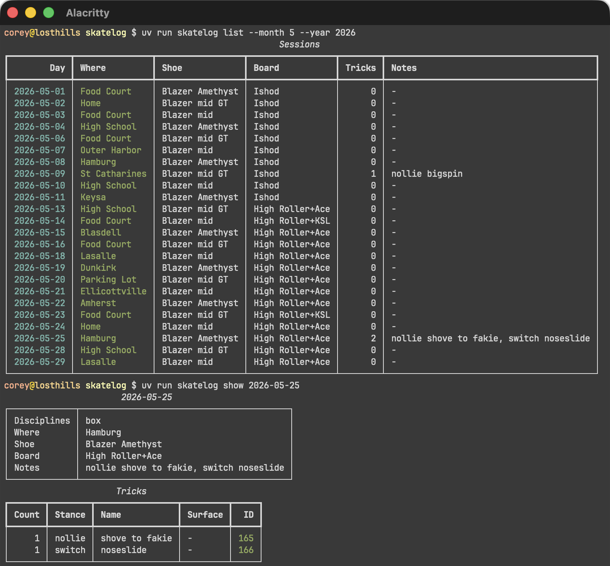
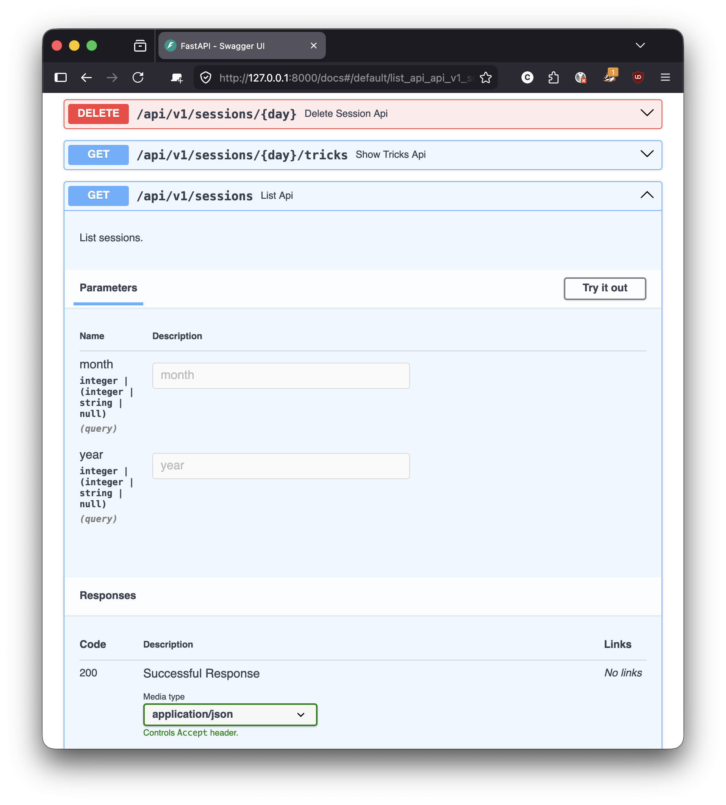
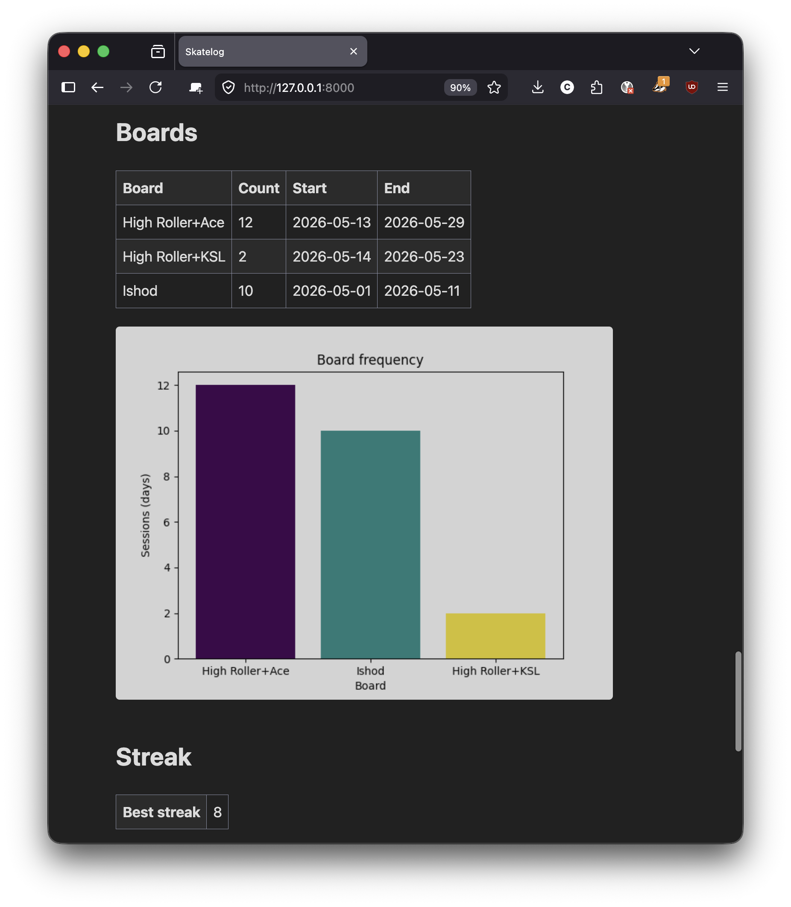
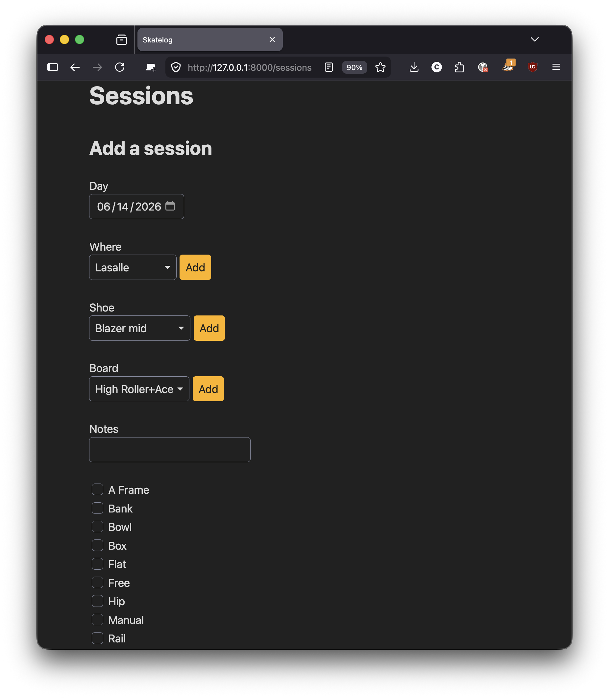

For the past few weeks I worked on a new project with the goal of learning Python: Skatelog.
Skatelog is the software equivalent of my skateboard journal. I can add my sessions with details like location, shoes I wore, board I skated, and obstacles I skated. I can list past sessions and generate some basic analytics including how I skate each obstacle and how much I use my gear. I can import the spreadsheets I've been using as a journal and export back to a spreadsheet.

Skatelog includes:
My goal with this project was to learn Python. I used Python professionally around 2014. However, that was back in the early-ish days of Python 3. The project used Tornado, and that's all I remember.
When I started my re-learning-Python journey, I read some Python guides. But working on an actual project is more engaging. And this project was something I could see myself actually using.

After working on Skate Index, I wanted to go back to programming everything by hand. Unless it's code I really don't want to write, I'd rather write it by hand. (Maybe there's a minimum code coverage threshold that for unknown reasons includes unit tests only.) Especially if it's something I'm trying to learn. Not only am I more likely to remember what I write, but I think the code turns out better. And bugs are easier to solve.
Furthermore, I really wrote everything by hand considering I used Neovim as my editor with a relatively small configuration. Neovim and tmux are 2 projects I've been interested in lately. I've also been using ideavim for Intellij, but not with Skatelog. I used to think I was incapable of using vim, but I stuck with it, and now it feels much more natural.

With Skatelog, I started with the CLI. I was pretty impressed with rich. The app was very simple, but the output looked very nice. Once I could store all the data I needed, I moved onto some analytics. I like to see how many times I've used each board or worn each pair of shoes.
When that was done, I added trick parsing. I have a notes field where I usually enter tricks I learned, but I also enter anything of interest or why I took the day off. This is probably the weakest part of the app, but I got to work with regexes a lot. Next was the api. I used FastAPI. Since the CLI was already done, the API was quick. Finally there was the dashboard. I wanted the dashboard to be right, because I figured it's the interface I'm most likely to use.

I wrote tests as I went along. I added a Github workflow with linting, formatting checks, and test reports. I used modern features and tools, including type hints and uv. In these ways I treated it like a professional project.
However, it is a personal project, so I took some liberties. The CLI and dashboard are mostly untested. While Rich looks nice, I thought it might complicate testing. And I'm not very familiar with front-end testing. As I said, it was a personal project so I wanted to keep things fun. I didn't want this project to become a chore.
I feel much more comfortable with Python after working on Skatelog. I may even use Skatelog on a daily basis to replace one of my skateboard spreadsheets. So, I believe it was a success.
Compared to Skate Index, in which I used generative AI almost exclusively, I enjoyed writing Skatelog by hand. I feel like I bought Skate Index, whereas I feel like I made Skatelog.